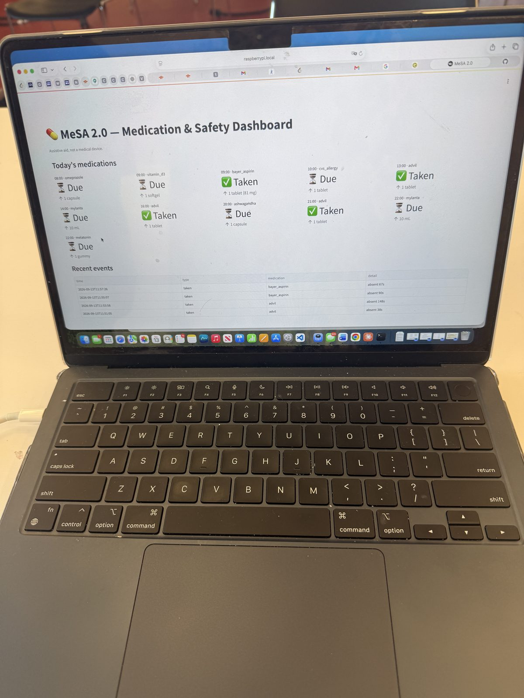

The story
How this started
This past summer, I proposed TLDR; to our public library: 4 Saturday mornings to get kids engaged in robotics activities to create curiosity in building. In September 2026 I took MeSA to our public library and ran it live in the Science Lab room for all. The laptop in the photo is from that morning. It logged four doses while people watched.
Afterwards I was invited by the library to continue something for the younger kids: a short, hands-on robotics series they would host most Saturday mornings, where I would help young minds build from LEGOs and learn more about robotics. So now I spend Saturdays there, helping kids in grades 4 to 8 get the basics of robotics with LEGO kits. That is TLDR; continued.
Why the semicolon?
In writing, a semicolon connects two complete ideas instead of ending the sentence. At TLDR; it reminds us that learning doesn't stop — it continues.
